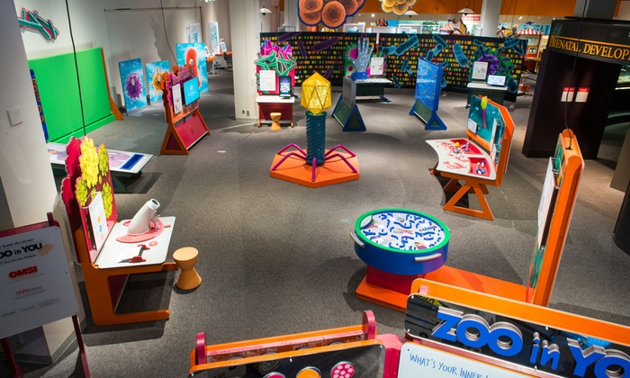

Quick Tips

- Go during the weekdays, less of a crowd there.
- Buy your tickets for special exhibits in advance.
- Sign up for their email list to get updates on special offers and events.
- Visit their website to learn more about the exhibits before hand.
- Make sure to explore every exhibit and take in all of the sites.
- Be prepared to purchase some gifts from the extensive collection within the giftshop.
- Make the most of your visit!
The Gateway Science Museum features 4 exhibits, with one of those as the main attraction. Currently the main attraction is the “Zoom Into Nano” exhibit, which showcases different uses of nanotechnology and how it’s used in science. When you first enter the museum, to the left is a gift shop and where you can purchase your tickets. The gift shop features come cool toys and other fun scientific items. Another one of the exhibits highlights the natural history of Northern California, and in particular Butte County. In the natural history exhibit there is an interactive display to show many different features, like the geological breakdown of Butte County. In the middle of the museum there is an interactive area for the younger audience and is highly recommended to generate interest in science with the younger audience
First Year Student Focus
We would highly recommend students who are interested in majoring in science to attend the Gateway Science Museum. The museum’s exhibits feature different fields of science that are all interesting. If someone was interested in teaching science as a career, they could volunteer at the museum and teach people of all ages about science and all the exciting things happening in science.
Things To Do Here

History
The Gateway Science Museum’s impetus was started back in 1996. In 1999, Chico State donated the land for the development of the museum. The museum had a proposed project budget of $4.2 million, Proposition 40 granted the developers $3 million for the construction of the museum. The remainder of the funding came through public contributions. Originally the museum was under the name, Northern California Natural History Museum, but it was changed to the Gateway Science Museum in March of 2009. Museum officials found that the new name was easier to remember and was more catchy. As part of the construction, the entrance of the museum included bricks with sponsors names on it. Construction of the museum was finished in June 2009. The Gateway Science Museum had a preliminary opening for families on October 24th, 2009, with an official opening date set for Spring 2010. The grand opening was set for February 27th, 2010 at 10:00 a.m. with the main attraction being giant robotic insects. After 17 years, the Gateway Science Museum opened and according to a news report, many community members were ecstatic that Chico had a science museum. A key feature of the museum is the garden, which highlights different ecological and geological features of Northern California, including; the south side featuring the Sacramento River Delta, the east side featuring the Big Chico Creek riparian corridor, and the north side featuring the lower montane mixed forest.
The locals know that the Gateway Science Museum is a great place to learn about different concepts in science. There are four new exhibits depending on the seasons each year. You can catch about 2-3 people go into the museum on a regular day, meanwhile the weekends there’s a bit more, and Saturday’s are known to be their busiest day. According to one of the volunteer’s, elementary kids are what is seen most in the museum, and the most popular exhibit in the museum is the “Zoom into nano”. The value this museum has is, giving kids the opportunity to have hands on experiences when learning about science. The Gateway Science Museum is great for school field trips and is very unique to the community. The encounters and interviews our group had with the visitors were all expressed in positive feedback.
What The Locals Know